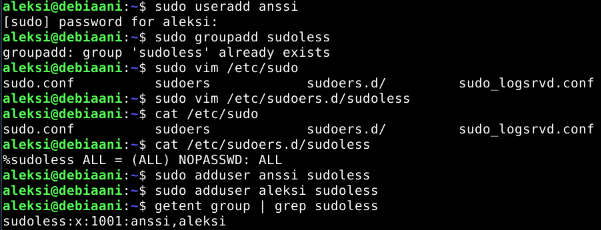
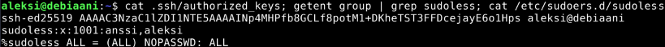

Host laitteisto
- Prosessori: AMD Ryzen 9 5900x 12-Core
- Keskusmuisti: 32GB DDR4
- Näytönohjain: NVIDIA GeForce RTX 3080
- OS: Linux 7.2.11-1-cachyos x86-64
Virtuaalikone, local
- 4 CPU
- 6GB RAM
- 20GB
- Debian 13, 64-bit
Harjoitus 2: Voileipä (Karvinen 2026a)
x) Tiivistelmä
Karvinen 2026: Sudo without password (Karvinen 2026b)
- Raportissa käydään läpi kuinka käyttäjä tehdään, lisätään ryhmään ja kuinka ryhmälle lisätään
- Tehdään käyttäjä, jos sitä ei ole vielä olemassa (sudo adduser antero)
- Lisätään uusi ryhmä, joka lisätään käyttäjälle (sudo groupadd sudoless; sudo adduser antero sudoless)
- /etc/sudoers.d/sudoless lisätään rivi %sudoless ALL = (ALL) NOPASSWD: ALL, joka lisää ryhmään sudoless(%sudoless), kaikille koneille(ALL), ei kysytä käyttäjältä salasanaa millekkään sudo komennolle (NOPASSWD: ALL)
- Voidaan testata kirjautumalla käyttäjällä koneelle, unohtamalla aiemmat kredentiaalit komennolla sudo -k ja ajamalla esimerkiksi komento echo sudolla. Jos salasaana ei kysytä enää, on muutokset onnistuneet.
Munroe 2006: xkcd149: Sandwich (Munroe 2026)
- Sarjakuvassa kuvataan, miten voimakas komento sudo on
Karvinen 2026: Passwordless Sudo with Ansible (Karvinen 2026c)
- Käyttäjälle lisätään master koneen julkinen avain
- Ansiblella voidaan lisätä käyttäjälle salasanattomat sudo komennot kopioimalla agentti koneen /etc/sudoers.d/sudoless tiedostoon rivi %sudoless ALL = (ALL) NOPASSWD: ALL\n
- Lisäämällä become: true site.yaml tiedostoon saadaan ansible kokeilemaan sudo oikeuksia.
- Lisäämällä ansible-playbook komentoon liput -K tai --ask-become-password, kysyy ansible salasanaa sudolle.
ansible-doc (Ansible Community Documentation)
copy
- Kopioi tiedoston tai kansion rakenteen paikalliselta koneelta etäkoneelle.
- content vaihtoehto kertoo mitä tiedostoon kirjoitetaan. Vaatii 'dest' vaihtoehdon olemaan jokin tiedosto.
- dest vaihtoehto kertoo absoluuttisen polun, johon tiedosto kopioidaan. Jos kansiota ei ole olemassa, johon tiedostoa ollaan kopioimassa, dest epäonnistuu.
- src vaihtoehto kertoo lokaalin polun tiedostoon, joka halutaan kopioida etäpalvelimelle. Voi olla absoluuttinen tai suhteellinen (relative). Jos polku on kansio, se kopioidaan rekursiivisesti. Jos polku loppuu '/' merkkiin, niin vain kansion sisällä olevat asiat kopioidaan, mutta ei itse kansiota.
- owner vaihotehdolla määritellään käyttäjä, joka syötetään chown komentoon tiedostojen ja kansioiden luonnin yhteydessä. Älä käytä numeerista käyttäjänimeä, silloin sen katsotaan olevan käyttäjän ID.
- group vaihtoehto toimii kuten owner, mutta ryhmälle.
- mode vaihtoehdolla määritellään kohde tiedoston tai kansion oikeudet. Käytettävä edessä nollaa, esim. '0644', tai käytettävä quoteja `'644'`.
apt
- name vaihtoehdossa annetaan lista pakettien nimiä, kuten vim,tree. Nimen perään voidaan lisätä tietty tai haluttu raja versionumerolle, esimerkiksi vim=9.1 tai vim>=9. Myös villiäkorttia voidaan käyttää, vim=9.* tai apt*
- state vaihtehto kuvaa haluttua paketin tilaa. Esimerkiksi latest varmistaa että viimeisin versio on asennettu ja present varmistaa että paketti on olemassa.
- update_cache vaihtoehto on sama kuin apt-get update.
file
- path vaihtoehto kertoo polun tiedostoon jota halutaan muokata
- recurse vaihtoehto asettaa rekursiivisesti spesifioidut tiedosto atribuutit kansion sisältöihin. Toimii vain kun state on määritelty arvoon directory.
- src vaihtoehdolla määritellään tiedoston polku johon se linkittyy. Toimii vain state=link ja state=hard arvoilla.
- state vaihtoehdolla on useampi eri vaihtoehto. Arvolla absent kansiot poistetaan rekursiivisesti. Arvo directory alikansiot luodaan jos niitä ei vielä ole.
- owner vaihtoehdolla määritellään käyttäjä joka omistaa tiedostojärjestelmän objektit.
- group vaihtoehto toimii samoin kuin copy metodin group vaihtoehto. Group määrittelee mikä ryhmä omistaa tiedostot ja kansiot.
- mode vaihtoehto toimii samoin kuin copy metodin mode vaihtoehto. Määrittelee mitä chmod arvoa käytetään tiedostoihin ja kansioihin.
user
- name vaihtoehto määrittelee nimen käyttäjälle, joka luodaan, poistetaan tai jota muokataan.
- create_home vaihtoehto on oletuksena true. Jos se asetetaan false arvoon, käyttäjälle ei määritellä koti hakemistoa.
- comment vaihtoehto määrittelee kuvaus kentän käyttäjälle.
- groups vaihtoehto määrittelee käyttäjän ryhmät listassa. Jos jätetään tyhjäksi, käyttäjä listään vain pääryhmään.
- shell vaihtoehdolla määritellään käyttäjän käyttämä komentotulkki (shell).
- state vaihtoehdolla määritellään onko käyttäjä olemassa vai ei. Joko arvo absent tai present.
- system vaihtoehdolla tehdään uudesta käyttäjästä järjestelmätili. Toimii vain jos account vaihtoehto on state=present ja käyttäjä ei ole vielä olemassa.
authorized_key
- Asettaa tai poistaa SSH avaimet käyttäjille.
- user vaihtoehdolla määritellään käyttäjä jonka authorized_key tiedostoa muokataan.
- key vaihtoehto määrittelee julkisen avaimen tai avaimet jotka tallennetaan authorized_key tiedostoon. Voi olla Ansible 1.9 version jälkeen myös url. Voidaan myös käyttää
a) Sudoless (Karvinen 2026a)
Aloitetaan tekemällä tunnus ansiblea varten. Päätän nimetä ansible käyttäjän anssiksi, jolle teen ryhmän sudoless, joka voi käyttää sudoa ilman salasanaa. Lisään myös oman käyttäjäni, aleksi, sudoless ryhmään. Sudoless ryhmä olikin jo tehtynä, todennäköisesti tein sen luennon (29.10.2026) aikana kun seurasin Karvisen opetusta ja kokeilin samoja asioita.

SSH sekä sudo on automatisoituja käyttäjälle Anssi.

Tehtävänanto (Karvinen 2026a)
- x) Lue ja tiivistä. (Tässä x-alakohdassa ei tarvitse tehdä testejä tietokoneella, vain lukeminen tai kuunteleminen ja tiivistelmä riittää. Tiivistämiseen riittää muutama ranskalainen viiva. Ei siis vaadita pitkää eikä essee-muotoista tiivistelmää. Lisää kuhunkin jokin oma kysymys tai huomio. Paljon komentoja sisältävistä dokumenteista kannattaa nostaa mukaan keskeiset komennot ja valinnat. Sisältöä, ei vain metatekstiä tai kuvailua.) Niemi 2025: H4 Tehtävät Partanen 2025: Harjoitus 5: Nimekäs: a) Nimi (Vain a-kohta.)
- a) Sudoless. Tee ansiblea varten tunnus, jolla voi käyttää sudoa ilman salasanaa. Sekä ssh-kirjautuminen että sudon käyttö tulee olla ansbilea varten automatisoitu.
- b) Antero. Tee salasanaton, automaattisesti ssh:lla kirjautuva tunnus Ansiblella.
- c) Package. Asenna kaksi pakettia ansiblella.
- d) File. Kirjoita orjalle useamman rivin mittainen tiedosto Ansiblella. Määrittele sen omistaja, omistava ryhmä ja oikeudet. Käytä oikeuksille oktaalinumeroa, esim. "0600". Kerro, mitä oikeudet ovat symbolisessa muodossa, esim. "-rwxr--r--". Selitä, mitä kukin käyttäjä saa tehdä tuolle tiedostolle.
- e) Jotain muuta. Näytä esimerkki ansiblen käskystä, jota ei ole vielä käsitelty kurssilla tai kotitehtävissä. Voit ottaa jonkun muun modulin kuin apt, file, copy, user tai authorized_key. Tai voit käyttää ominaisuutta, jota ei vielä ole demonstroitu. Jos tiivistystehtävässä x on mainittu ominaisuuksia, joita ei tunneilla tai läksyissä kokeiltu, nekin kelpaavat.
Lähteet
- Karvinen, Tero 2026a. h2 Voileipä. Luettavissa: https://terokarvinen.com/palvelinten-hallinta/#h2-voileipa. Luettu: 29.10.2026
- Karvinen, Tero 2026b. Sudo without password. Luettavissa: https://terokarvinen.com/passwordless-sudo/. Luettu: 29.10.2026
- Munroe, 2026. Sandwich. Luettavissa: https://xkcd.com/149/. Luettu: 29.10.2026
- Karvinen, Tero 2026c. Passwordless Sudo with Ansible. Luettavissa: https://terokarvinen.com/passwordless-sudo-with-ansible/. Luettu: 29.10.2026
- Ansible Community Documentation, ansible-doc. Luettavissa: https://docs.ansible.com/projects/ansible/latest/index.html. Luettu: 31.10.2026